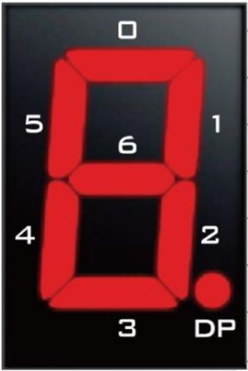
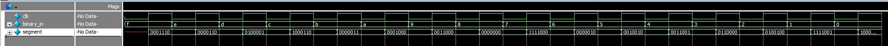

Binary to 7-Segment
The 7-segment decoder is used to translate a 4-bit binary value into the 7 outputs required to display it on a 7-segment display. The purpose of it here is to aid in testing of the VGA, UART Tx, and UART Rx modules.
DE-10 Lite Pinout
Present on the DE-10 Lite are six 7-segment displays. The figure and table below show the pinout for the 7-segment displays on the DE-10 Lite. The segments are active low, meaning that a segment will light up when its corresponding output is low.

Each segment in a display is indexed from 0 to 6 and DP (decimal point)
Here we will be focusing on the first two 7-segment displays, which are connected to the following pins on the DE-10 Lite:
| Segment | DE-10 Lite Pin |
|---|---|
| 0 | PIN_C14 |
| 1 | PIN_E15 |
| 2 | PIN_C15 |
| 3 | PIN_C16 |
| 4 | PIN_E16 |
| 5 | PIN_D17 |
| 6 | PIN_C17 |
| DP | PIN_D15 |
| Segment | DE-10 Lite Pin |
|---|---|
| 0 | PIN_C18 |
| 1 | PIN_D18 |
| 2 | PIN_E18 |
| 3 | PIN_B16 |
| 4 | PIN_A17 |
| 5 | PIN_A18 |
| 6 | PIN_B17 |
| DP | PIN_A16 |
binary_to_7seg.v
Module I/O
| Name | Direction | Description |
|---|---|---|
clk |
Input | Clock signal for sequential logic |
binary_in |
Input | 4-bit binary input to be converted |
segment |
Output | 7-bit output for the segments of the 7-segment display (0-6 on the DE10 Lite) |
Verilog
The binary_to_7seg module takes a 4-bit binary input and converts it to the corresponding 7-segment display output. The segments are active low, so the output is inverted before being sent to the display.
module binary_to_7seg (
// Inputs
input clk, // Clock signal for sequential logic (if needed)
input [3:0] binary_in, // 4-bit binary input to be converted
// Outputs
output reg [6:0] segment // Segments of the 7-segment display active-low (0-6 on the DE-10 Lite)
);
// Clocked process to convert binary input to 7-segment output
always @(posedge clk) begin
// always @(*) begin
case (binary_in)
4'b0000: segment = 7'b1000000; // 0
4'b0001: segment = 7'b1111001; // 1
4'b0010: segment = 7'b0100100; // 2
4'b0011: segment = 7'b0110000; // 3
4'b0100: segment = 7'b0011001; // 4
4'b0101: segment = 7'b0010010; // 5
4'b0110: segment = 7'b0000010; // 6
4'b0111: segment = 7'b1111000; // 7
4'b1000: segment = 7'b0000000; // 8
4'b1001: segment = 7'b0011000; // 9
4'b1010: segment = 7'b0001000; // A
4'b1011: segment = 7'b0000011; // B
4'b1100: segment = 7'b1000110; // C
4'b1101: segment = 7'b0100001; // D
4'b1110: segment = 7'b0000110; // E
4'b1111: segment = 7'b0001110; // F
default: segment = 7'b1111111; // Blank for invalid input
endcase
end
endmodule
Testing
Testing of the binary_to_7seg module can be done using a simple testbench that applies various 4-bit binary inputs and checks the corresponding 7-segment outputs. The testbench can be implemented in SystemVerilog as follows:
binary_to_7seg_tb.sv
module binary_to_7seg_tb;
reg clk;
reg [3:0] binary_in;
wire [6:0] segment;
// Instantiate the binary to 7-segment converter
binary_to_7seg uut (
.clk(clk),
.binary_in(binary_in),
.segment(segment)
);
// Clock generation
initial begin
clk = 0;
forever #5 clk = ~clk; // 100 MHz clock
end
logic [3:0] test_inputs [15:0] = '{4'b0000, 4'b0001, 4'b0010, 4'b0011, 4'b0100, 4'b0101, 4'b0110, 4'b0111,
4'b1000, 4'b1001, 4'b1010, 4'b1011, 4'b1100, 4'b1101, 4'b1110, 4'b1111};
logic [6:0] test_outputs [15:0] = '{7'b1000000, 7'b1111001, 7'b0100100, 7'b0110000, 7'b0011001, 7'b0010010, 7'b0000010, 7'b1111000,
7'b0000000, 7'b0011000, 7'b0001000, 7'b0000011, 7'b1000110, 7'b0100001, 7'b0000110, 7'b0001110};
// Test sequence
initial begin
// Test all possible 4-bit inputs (0 to 15)
for (int i = 0; i < 16; i = i + 1) begin
binary_in = test_inputs[i];
#10; // Wait for the output to stabilize
// Check if the output matches the expected value $error("Test failed for input %b: expected %b, got %b", binary_in, test_outputs[i], segment);
if (segment !== test_outputs[i]) begin
$error("Test failed for input %b: expected %b, got %b", binary_in, test_outputs[i], segment);
end else begin
$display("Test passed for input %b: got expected output %b", binary_in, segment);
end
end
$stop; // End the simulation
end
endmodule
Running the Testbench
To run the testbench I used QuestaSim. Below is the transcript and waveform of the testbench output, showing the results of each test case:

An image of the waveform, showing the clock, binary input, and 7-segment output for each test case.
run -all
# Test passed for input 1111: got expected output 0001110
# Test passed for input 1110: got expected output 0000110
# Test passed for input 1101: got expected output 0100001
# Test passed for input 1100: got expected output 1000110
# Test passed for input 1011: got expected output 0000011
# Test passed for input 1010: got expected output 0001000
# Test passed for input 1001: got expected output 0011000
# Test passed for input 1000: got expected output 0000000
# Test passed for input 0111: got expected output 1111000
# Test passed for input 0110: got expected output 0000010
# Test passed for input 0101: got expected output 0010010
# Test passed for input 0100: got expected output 0011001
# Test passed for input 0011: got expected output 0110000
# Test passed for input 0010: got expected output 0100100
# Test passed for input 0001: got expected output 1111001
# Test passed for input 0000: got expected output 1000000
# ** Note: $stop : C:/Users/lrwon/Documents/DE10-Lite-NES/tests/binary_to_7seg_tb.sv(39)
# Time: 160 ns Iteration: 0 Instance: /binary_to_7seg_tb
# Break in Module binary_to_7seg_tb at C:/Users/lrwon/Documents/DE10-Lite-NES/tests/binary_to_7seg_tb.sv line 39